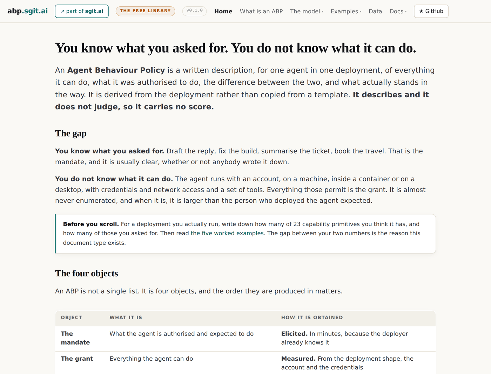
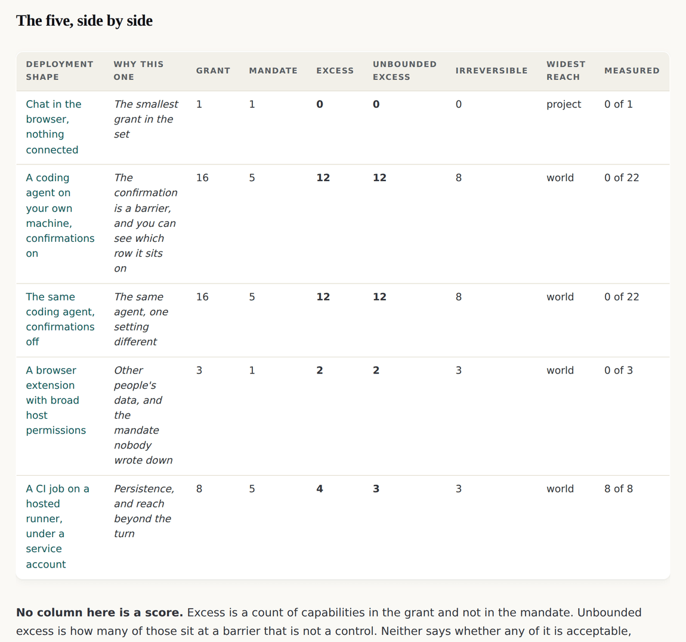
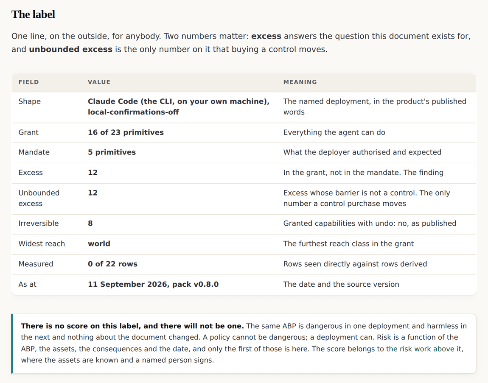
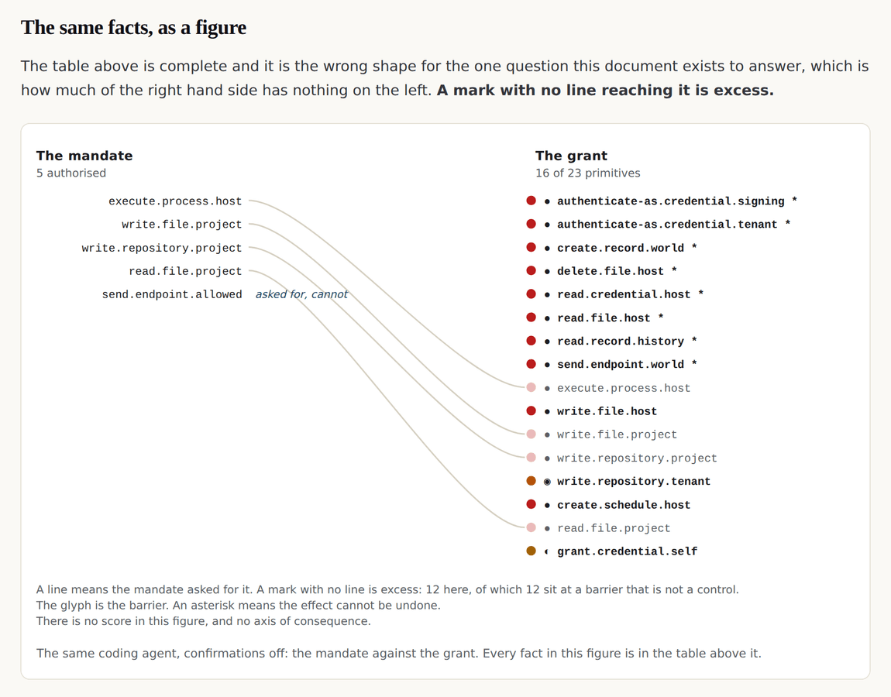
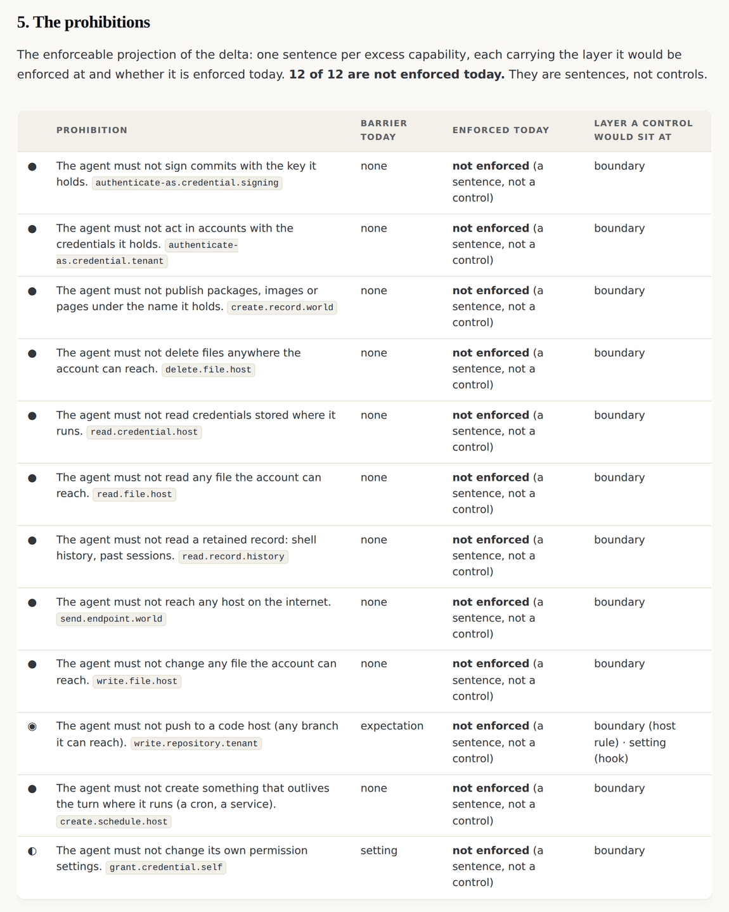

v0.1.0: The ontology already existed, so the first release promoted it instead of writing one
Twenty three capability primitives, nine deployment shapes and four barriers were already published as the data pack a game reads. The first release gave them an address and derived five worked ABPs from them, and the thing that took the time was the honesty line rather than the research.
v0.1.0 tag, so it shows the site as it stood at that release and not as it stands today. Read on to v0.2.0, and it is where the sequence starts.The gap the document exists for
You know what you asked for. Draft the reply, fix the build, summarise the ticket. That is the mandate, and the person who deployed the agent already holds it, whether or not anybody wrote it down.
You do not know what it can do. The agent runs with an account, on a machine, in a container or on a desktop, with credentials and network access and a set of tools. Everything those permit is the grant. It is almost never enumerated, and when it is, it is larger than the person who deployed it expected. The Agent Behaviour Policy is the document that puts the two on one page.

The finding that changed the plan
The build pack written before this site existed contains one sentence that changed what the first release was: the ontology the ABP needs already exists, published, and the first job is not to author one. A game about agent permissions had published its data pack at a stable address: twenty three capability primitives in a verb.object.reach grammar, nine named deployment shapes, a barrier glyph on every cell, an undo class on every capability, and an honest measurement note saying that of ninety nine rows, twenty one were measured and the rest derived.
data/upstream/, and both the build and the gate recompute their hash and refuse to proceed if it disagrees. Two field names changed and the provenance block on each file says which.Four objects, and only one of them is written by anybody
An ABP is not a document. It is four objects, of which the document is a rendering, and the order they are produced in is the order the model page teaches them.
The mandate has to be captured even though it is already known, because a grant on its own is an inventory and nobody acts on an inventory. That is the whole reason the cheapest object to collect is the one that makes the other three mean something.
The barrier, which is where the argument actually is
For every capability in the grant, an ABP records what stands between the agent and it. There are four kinds, and three of them bound nothing. That is not an opinion about the four rows: it follows from what each one is.
The estate published this as a glyph before it named it as a rule. The game's map already carried all four kinds on every cell, and reading the third and fourth rows together gives you the test: a setting the agent's own account could change is not a control, because the grant includes the ability to remove the bound. The barrier page carries the four with their published wording.
Five examples, derived rather than authored
The five worked ABPs in the first release were not written. Every number, every glyph and every row on them is computed from the promoted data at build time, which is what makes the provenance line trustworthy: a page that states twenty one of ninety nine rows measured, and got that from a constant somebody typed, is asserting exactly what the map is careful to qualify.

Read the third one beside the second. They are the same product, the same machine and the same account, with one setting different. That pair is the argument that an ABP is about the deployment rather than the product, and it is the release's cheapest demonstration: one line in a list and a build.
The label, and the only number a buyer can move

Two numbers matter and the label says which. Every real control put in place shifts one capability into the fourth barrier row and the second number falls. The first one does not move, because the agent can still do the same things: what changed is that some of them are now bounded by something it cannot reach.
One figure, answering one question
The leaflet is complete and it is the wrong shape for the question the document exists to answer, which is how much of the grant has nothing on the mandate side. A reader scanning rows cannot see that without counting.

The prohibitions, each carrying its barrier
The enforceable projection of the delta is one sentence per excess capability. Every one of them carries the barrier it sits at today, because a prohibition shown without its barrier manufactures assurance.

What the release cost, and the number it could not produce
The examples were instrumented rather than estimated, because the store has to price an ABP and nobody knew what one costs. The published table says five minutes each and nought questions asked of a human.
A disagreement recorded rather than resolved
The foundation document says that turning confirmations off moves the barrier on every capability in the delta by one row. In the published data it moves exactly one barrier, on execute.process.host, and that capability is inside the mandate rather than in the delta, because the deployer asked for it. So the label's numbers do not move at all, and the two documents are still materially different.
That is a stronger argument for the leaflet and against a headline number than the original wording was, and it is recorded in v0.1.0's notes rather than quietly fixed. The method is to record the gap.
The five examples · The capability grammar · The barrier · v0.1.0's own release record
Read the sequence
| Direction | The release |
|---|---|
| Newer | v0.2.0: A rule this site published in the morning was wrong by the afternoon, and the correction is on the page |
| All of them | One article per release |